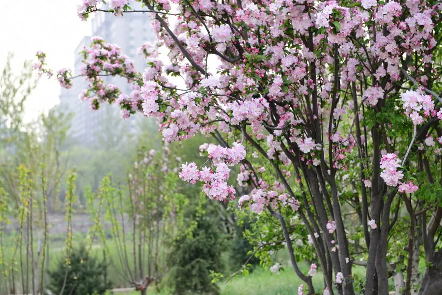

灌木与花木 · 植物界
西府海棠 Malus micromalus

中国特有的传统海棠名品，春季先花后叶、花朵粉白相间，花姿挺拔，果实酸甜可食，是庭院赏花佳品。
- 分类
- 门被子植物门纲木兰纲目蔷薇目科蔷薇科属苹果属
- 栖息环境
- 海拔 2000 米以下的山坡、庭院与公园，喜光耐寒耐旱
- 地理分布
- 中国辽宁、河北、山西、陕西、甘肃、山东、云南等地，南北各地广泛栽培
- 保护级别
- 暂无评估；中国未列入国家重点保护野生植物名录
物种志
西府海棠为落叶小乔木，高可达 8 m，树姿峭立，枝条直立；叶片长椭圆形，边缘具细锯齿。花期 4–5 月，伞形花序生于短枝顶，花 4–7 朵，花梗直立，花瓣 5 枚、淡粉至白色，花径 3–4 cm，花姿挺拔而芳香；果实为梨果，球形，成熟时红色，果肉酸甜，可食。
西府海棠原产中国辽宁、河北、山西、陕西、甘肃、山东、云南等地，中国北方及长江流域广泛栽培，喜光、耐寒、耐旱，适宜深厚肥沃、排水良好的土壤。它是传统海棠名品之一，因曾植于西府（今陕西宝鸡一带）而得名；花姿挺拔、花香清雅，与垂丝海棠的娇柔下垂形成对比，是庭院、公园与古典园林中的常见观赏树种。果实可食或加工果脯、果丹皮，也可入药。西府海棠、垂丝海棠、贴梗海棠与木瓜海棠并称为“海棠四品”。
形态与习性
- 株高可达 8 m，树姿峭立
- 花期4–5 月，花梗直立
- 果期9–10 月，梨果红色
- 光照喜光，不耐长期荫蔽
- 水分耐旱，怕积水
- 土壤深厚肥沃、排水良好的壤土
- 主要用途庭院观赏、果实食用与加工、盆景
趣味知识
- 西府海棠树姿峭立、花梗直立，与花梗下垂的垂丝海棠形成鲜明对比。
- 西府海棠因曾植于西府（今陕西宝鸡一带）而得名，是传统海棠名品。
- 西府海棠、垂丝海棠、贴梗海棠与木瓜海棠并称“海棠四品”。
- 西府海棠的果实酸甜可食，可加工果脯与果丹皮。